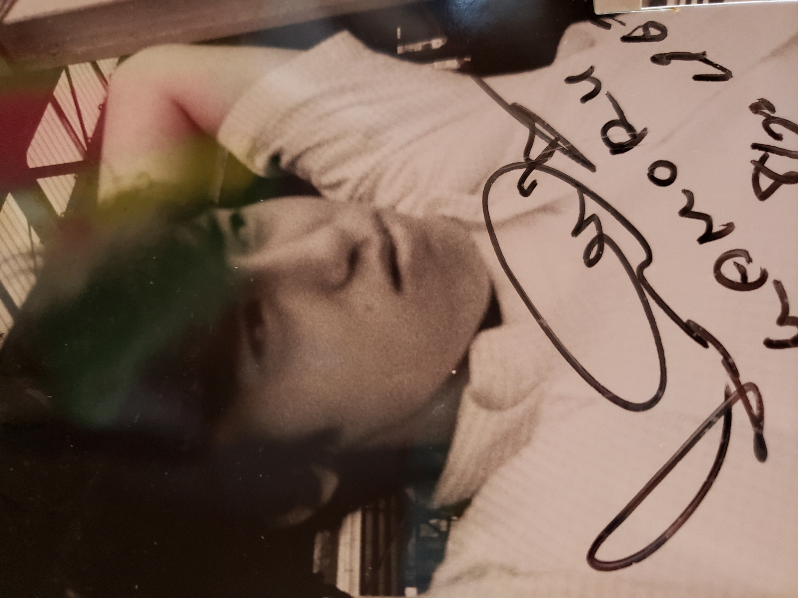

English
My brother’s early life had a background that was a little unusual for a Japanese person of that time. I do not think it is necessary to explain everything in detail here, but I would like to share one small part of it.
Our mother’s sister was married to an American military man. Because of that, my brother and I were able to enter the PX, an American supermarket used by military members and their families.
That is why my brother and I were able to wear Keds sneakers when we were young. We often visited our aunt’s house, and looking back now, it may have felt like a small American world inside Japan.
I was still very young, so I mostly remember being taken there by adults. But for my brother, I think that world may have felt more natural and familiar. Maybe that is one reason why he had such good taste and style.
At that time, hamburgers and root beer were not common in Japan at all. McDonald’s came to Japan much later. But my brother already knew those American foods and culture.
Today, hamburgers are everywhere, even in small towns. But when I first tasted one, I was truly impressed.
We also had rectangular American birthday cakes. Many people may imagine American cakes with whipped cream, but the cakes we knew were buttercream cakes. They were sweet, colorful, and very different from Japanese cakes.
These small memories may have helped shape my brother’s unique style, his sense of taste, and the special atmosphere of Honmoku in those days.

日本語
兄の生い立ちには、あの時代の日本人としては、少しだけ特別に感じられる背景がありました。 その背景も、兄の感性や音楽、そして人としてのやさしさにつながっていたように思います。
私たちの母の姉がアメリカ軍人と結婚していたこともあり、兄も私も、アメリカ軍関係者やその家族が利用する PXに入ることができました。
PXは、軍人やその家族が利用できるアメリカン・スーパーマーケットのような場所でした。 兄弟そろってKedsのスニーカーを普通に履いていたのも、そんな背景があったからです。
母の姉の家には、私たちもしばしば遊びに行っていました。 今思えば、そこは日本の中にありながら、どこか小さなアメリカのような空気を持った場所だったのかもしれません。
私はまだ幼かったので、ただ大人に連れられて行っていたという感覚でした。 けれど兄にとっては、その空気はもっと自然で、身近なものだったのではないかと思います。 兄のセンスの良さには、そうした特別な背景も影響していたのかもしれません。
まだ日本にハンバーガーやルートビアがほとんど存在しなかった時代に、私たちはそうしたアメリカの食べ物や文化に触れていました。 マクドナルドが日本にやって来るのは、ずっと後のことです。
今ではハンバーガーはどこにでもあり、地方の町でも当たり前に食べられるものになりましたが、 初めて口にしたときの感動は、今でも忘れられません。
誕生日には、長方形のアメリカンケーキを食べることもありました。 よく「アメリカンケーキは生クリーム」と思われがちですが、実際にはバタークリームのケーキでした。 甘くて、カラフルで、日本のケーキとはまったく違うものでした。
そんな小さな記憶の一つひとつが、兄の中にあった少し外国的で洗練された雰囲気、 そしてあの時代の本牧らしい空気につながっていたように思います。